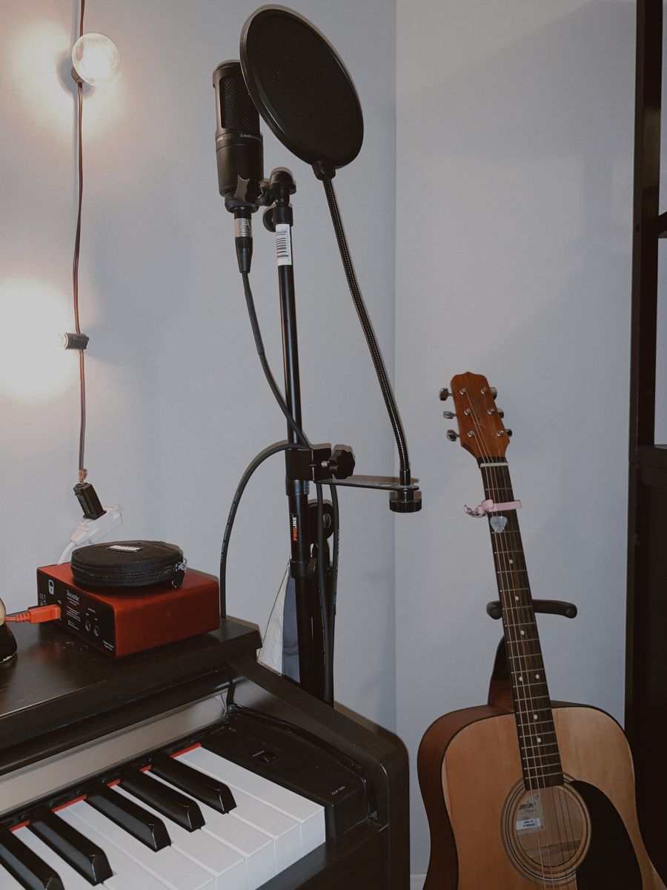

Pasatiempos
MÚSICA

Uno de mis más grandes pasatiempos es escuchar Música, me gusta casi todo tipo de música a excepción de algunos géneros, disfruto mucho las canciones tocadas solo en piano, debido a esto, se tocar un poco el piano y la guitarra, no soy experta en ello, pero lo intento.